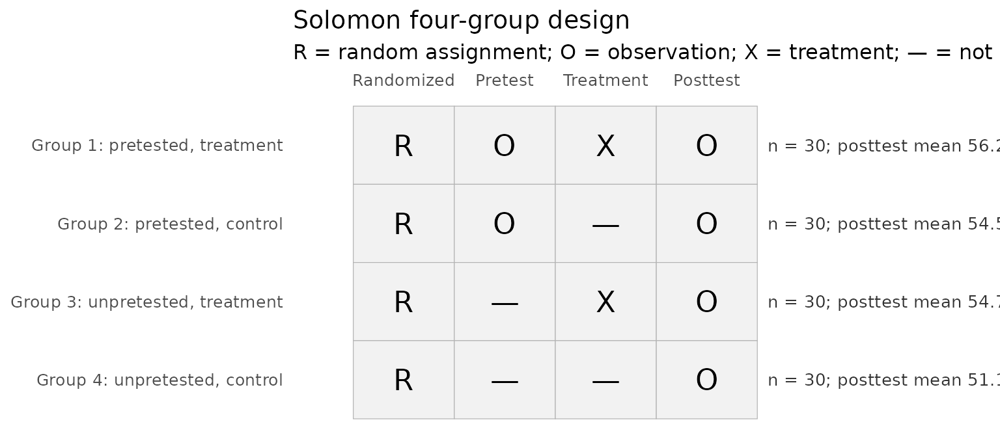
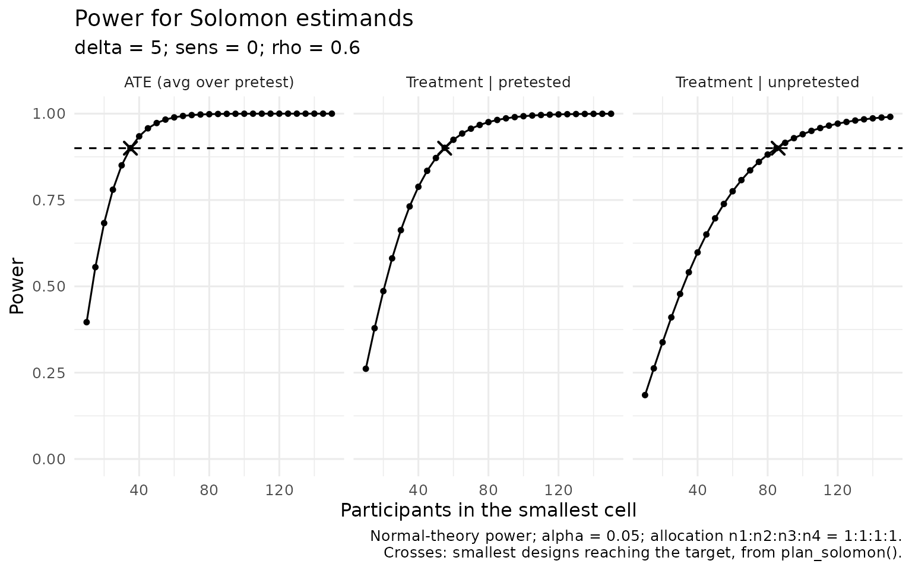
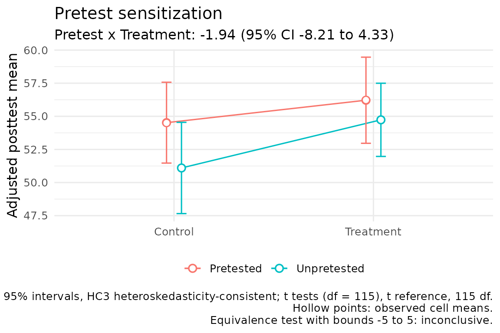
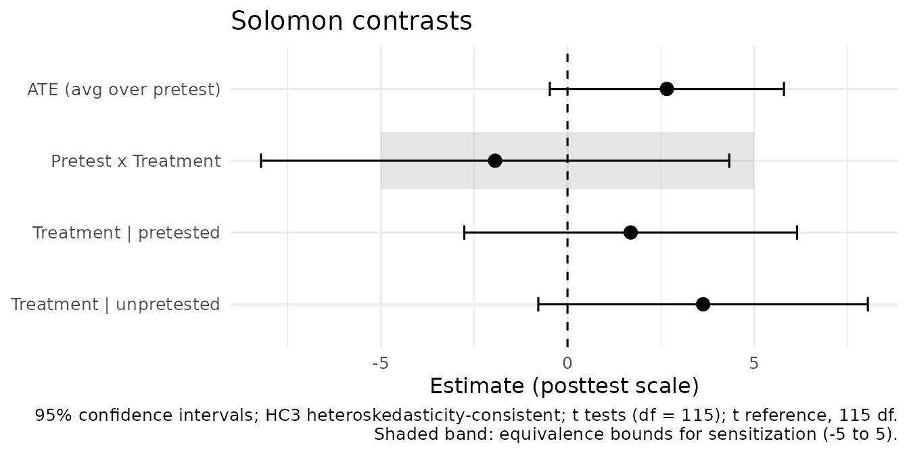

Getting Started: Analyzing a Solomon Four-Group Study
Source:vignettes/getting-started.Rmd
getting-started.RmdThis guide is for graduate students and applied researchers who need
to analyze, interpret, and report a Solomon four-group study. It follows
one example from checking the data to writing up the results, and it
explains where each recommendation comes from. For the full origin,
assumptions, and limitations of every method, see
vignette("solomon-methods").
The design and its three questions
Solomon (1949) extended the pretest-posttest control-group design by adding two groups that receive no pretest:
| Group | Pretest | Treatment | Posttest |
|---|---|---|---|
| 1 | Yes | Yes | Yes |
| 2 | Yes | No | Yes |
| 3 | No | Yes | Yes |
| 4 | No | No | Yes |
The four groups let a study ask three questions:
- Does the treatment work? Compare treatment with control.
- Does taking the pretest change posttest scores? Compare pretested with unpretested groups.
- Does taking the pretest change the treatment effect? This is pretest sensitization: the Pretest x Treatment contrast.
Sensitization should be tested rather than assumed. A systematic review of ten Solomon four-group studies with behavioral outcomes found only weak evidence that assessments interact with interventions, and concluded that too few rigorous studies exist to say whether such interactions occur (McCambridge et al., 2011).
solomonR reports four contrasts in mean posttest scores,
always as treatment minus control:
| Contrast | Meaning |
|---|---|
| Treatment | pretested | Treatment effect among pretested participants (Groups 1 vs. 2) |
| Treatment | unpretested | Treatment effect among unpretested participants (Groups 3 vs. 4) |
| Pretest x Treatment | Difference between those two effects (sensitization) |
| ATE (avg over pretest) | The two effects averaged with equal weight |
The example data
solomon_example is a simulated study with 30
participants per group and scores on a 0-100 scale. Because it was
simulated, the truth is known:
- the treatment effect is 5 points in both pretest conditions, so there is no sensitization and the ATE is 5 points;
- taking the pretest raises posttest scores by 2 points; and
- the pretest and posttest correlate at about 0.6.
data(solomon_example)
head(solomon_example)
#> y_post treat pretested y_pre
#> 1 60 1 1 55
#> 2 71 1 1 42
#> 3 58 1 1 58
#> 4 54 1 1 34
#> 5 57 1 1 42
#> 6 45 1 1 38Pretest scores are missing for Groups 3 and 4 by design: those participants never took the pretest.
Step 1: Check the design
Before fitting a model, confirm that all four groups are present, the design indicators are coded 0/1, and missing values are the kind you expect.
with(
solomon_example,
validate_solomon(y_post, treat, pretested, y_pre)
)
#> Solomon design validation: no errors found
#>
#> Group Cell n Post missing Pre absent (design) Pre missing
#> 1 Pretested, treatment 30 0 0 0
#> 2 Pretested, control 30 0 0 0
#> 3 Unpretested, treatment 30 0 30 0
#> 4 Unpretested, control 30 0 30 0
#> Pre unexpected
#> 0
#> 0
#> 0
#> 0
#>
#> [NOTE] Cell sizes range from 30 to 30.check_solomon_missing() separates pretests that are
absent by design from incidental missing values. Structurally absent
pretests are never imputed: not giving the pretest is the experimental
manipulation. Incidental missing values have their own supported
responses (White & Thompson, 2005; Little & Rubin, 2019).
with(
solomon_example,
check_solomon_missing(y_post, treat, pretested, y_pre)
)
#> Solomon missingness check
#> Pattern: structural pretest absence only (expected in a Solomon design)
#>
#> Group Cell n Post missing Pre absent (design) Pre missing
#> 1 Pretested, treatment 30 0 0 0
#> 2 Pretested, control 30 0 0 0
#> 3 Unpretested, treatment 30 0 30 0
#> 4 Unpretested, control 30 0 30 0
#> Pre unexpected
#> 0
#> 0
#> 0
#> 0
#>
#> Structural pretest absence (n = 60)
#> Participants assigned to the unpretested groups were never pretested; the
#> absence of a pretest is the experimental manipulation.
#> Response: Do not impute. Use analyses that respect the design, such as
#> fit_solomon_glm(), fit_solomon_ml(), fit_solomon_classic(), or SEM.
#> Unlike planned missing-data designs, where unmeasured values exist and
#> can be imputed, an imputed pretest here would describe a measurement that
#> never occurred.
#> Sources: Solomon (1949); Graham et al. (2006)A schematic of the design, in the notation of Campbell and Stanley (1963), shows each group’s size and posttest mean, and flags any group that is empty or too small to estimate its variability:
with(solomon_example, plot_solomon_design(y_post, treat, pretested))
Step 2: See how the design was analyzed historically
Early treatments of the design analyzed posttest scores with a
two-by-two analysis of variance and moved on to further tests depending
on which earlier tests were significant (Campbell & Stanley, 1963;
Huck & Sandler, 1973). Braver and Braver (1988) added a
meta-analytic combination, Test I. fit_solomon_classic()
reproduces this sequence and marks the tests the historical path reaches
with [PATH].
classic <- with(
solomon_example,
fit_solomon_classic(y_post, treat, pretested, y_pre)
)
classic
#> Classic Solomon analysis (historical teaching workflow)
#> -------------------------------------------------------
#> Selected pretested-group method: Test E (ancova)
#> Historical decision path: A -> D -> E -> H -> I
#>
#> Historical Tests A-I
#> --------------------
#> All tests are shown below. Tests marked [PATH] were reached by
#> the historical decision sequence for these data.
#>
#> [PATH] Test A: Pretest x Treatment interaction F(1, 116) = 0.29, p = 0.589
#> Test B: Treatment effect among pretested groups F(1, 116) = 0.49, p = 0.486
#> Test C: Treatment effect among unpretested groups F(1, 116) = 2.14, p = 0.146
#> [PATH] Test D: Treatment main effect F(1, 116) = 2.34, p = 0.129
#> [PATH] Test E: ANCOVA treatment effect F(1, 57) = 0.59, p = 0.444
#> Test F: Gain-score treatment effect F(1, 58) = 0.46, p = 0.499
#> Test G: Repeated-measures Treatment x Time interaction F(1, 58) = 0.46, p = 0.499
#> [PATH] Test H: Posttest-only treatment effect t(58) = 1.66, p = 0.103
#> [PATH] Test I: Braver & Braver (1988) Stouffer combination Z = 1.69, p(one-tailed) = 0.045 [E + H (ANCOVA + posttest-only)]
#>
#> Historical interpretation
#> -------------------------
#> Historical pathway: Test I produces a significant Stouffer combination. This result is retained for historical replication and should be interpreted in light of later Type I error critiques.
#>
#> Groups 3-4 effect size: Hedges g = 0.423, 95% CI [-0.086, 0.938] (noncentral t)
#>
#> Caution: Test I, the Braver & Braver (1988) Stouffer combination, is
#> reproduced for historical teaching and replication. Later simulation
#> work (see Sawilowsky et al., 1994) raised concerns about Type I error
#> for the conditional meta-analytic sequence; it is not the default
#> modern inferential recommendation in solomonR.Here the sequence runs A -> D -> E -> H -> I: each treatment test is nonsignificant, so the path keeps going until it reaches Test I. Choosing the next test because the last one was not significant is exactly the kind of conditional procedure that inflates Type I error. In a Monte Carlo study, the sequence ending in Test I had an experiment-wise Type I error rate nearly three times the nominal alpha (Sawilowsky et al., 1994). The historical workflow is worth knowing, but it should not be the primary analysis of a new study.
Step 3: Fit the recommended analysis
Contemporary practice specifies one analysis and its target
quantities in advance (Lundberg et al., 2021). For a randomized Solomon
study with a continuous outcome, fit_solomon_glm()
estimates all four contrasts from a single model that adjusts for the
pretest in the groups that took it. It uses
heteroskedasticity-consistent (HC3) standard errors by default (Long
& Ervin, 2000; Hayes & Cai, 2007) with t tests on the residual
degrees of freedom.
fit <- with(
solomon_example,
fit_solomon_glm(y_post, treat, pretested, y_pre)
)
fit
#> Solomon GLM (unified model)
#> Formula: y ~ treat * pretested + pre_obs
#> Covariance: HC3 heteroskedasticity-consistent; t tests (df = 115)
#>
#> Term Est (SE) t df p 95% CI
#> (Intercept) 51.100 (1.739) 29.39 115 <.001 [47.656, 54.544]
#> treat 3.633 (2.229) 1.63 115 0.106 [-0.782, 8.049]
#> pretested -26.219 (5.957) -4.40 115 <.001 [-38.019, -14.418]
#> pre_obs 0.598 (0.101) 5.91 115 <.001 [0.397, 0.798]
#> treat:pretested -1.940 (3.168) -0.61 115 0.541 [-8.214, 4.335]
#>
#> Key contrasts Est (SE) t df p 95% CI Wald R2
#> ATE (avg over pretest) 2.663 (1.584) 1.68 115 0.095 [-0.474, 5.801] 0.024
#> Pretest x Treatment -1.940 (3.168) -0.61 115 0.541 [-8.214, 4.335] 0.003
#> Treatment | pretested 1.693 (2.251) 0.75 115 0.453 [-2.765, 6.152] 0.005
#> Treatment | unpretested 3.633 (2.229) 1.63 115 0.106 [-0.782, 8.049] 0.023
#>
#> Wald R2: partial R-squared for conventional Gaussian OLS;
#> a Wald-based descriptive approximation when robust covariance is used.Compare the estimates with the truth. The true ATE is 5 points; this sample estimates 2.7 points, with a 95% confidence interval from -0.5 to 5.8. The interval contains the true value, and it also contains zero, so the test against zero is not significant (p = .095).
This is not a failure of the method. Estimates vary from sample to sample, and with 30 participants per group this design has roughly 85% power for the ATE and less for the treatment effect within each pretest condition. About one study in seven with this design would miss the effect. The confidence interval is the honest summary: it shows that effects anywhere from about zero to about six points are compatible with these data.
Planning the sample size in advance is how a study avoids this
situation. plan_solomon() finds the smallest design that
reaches a target power for each Solomon estimand. Using the values that
generated these data (a treatment effect of 5 points, a posttest
standard deviation of 10, and a pretest-posttest correlation of 0.6),
90% power requires:
plan_solomon(power = 0.90, delta = 5, sens = 0, rho = 0.6, sigma = 10)
#> estimand true_effect n1 n2 n3 n4 total_n power basis
#> 1 ATE (avg over pretest) 5 35 35 35 35 140 0.9001254 analytic
#> 2 Pretest x Treatment 0 NA NA NA NA NA NA analytic
#> 3 Treatment | pretested 5 55 55 55 55 220 0.9011284 analytic
#> 4 Treatment | unpretested 5 86 86 86 86 344 0.9032300 analytic
#> mcse target_power alpha
#> 1 NA 0.9 0.05
#> 2 NA 0.9 0.05
#> 3 NA 0.9 0.05
#> 4 NA 0.9 0.05
#> note
#> 1
#> 2 True effect is zero; no sample size gives power against it.
#> 3
#> 4The sensitization row is empty because these data were generated without sensitization, and no sample size gives power against a zero effect. Detecting sensitization is far more demanding than detecting the average effect, because the sensitization contrast has four times the sampling variance of the ATE. Planning to detect sensitization of 5 points with 80% power:
plan_solomon(power = 0.80, delta = 5, sens = 5, rho = 0.6, sigma = 10,
estimand = "sensitization")
#> estimand true_effect n1 n2 n3 n4 total_n power basis
#> 1 Pretest x Treatment 5 104 104 104 104 416 0.8019499 analytic
#> mcse target_power alpha note
#> 1 NA 0.8 0.05A Solomon study powered only for the ATE is usually underpowered for
the question the design exists to answer. ?plan_solomon
also shows how to trade pretested against unpretested participants when
pretesting is costly.
Power curves show the same planning problem across sample sizes. Each
cross marks the design plan_solomon() returns for the
target:
plot_power_solomon(
n = seq(10, 150, by = 5), delta = 5, sens = 0, rho = 0.6, sigma = 10,
estimand = c("ate", "pretested", "unpretested"), target = 0.90
)
Step 4: Ask whether sensitization is negligible
The Pretest x Treatment estimate is -1.9 points (p = .541). A nonsignificant result does not show that sensitization is absent. To make that claim, use an equivalence test against a smallest effect size of interest set before seeing the data (Lakens, 2017; Lakens et al., 2018).
Suppose the researchers decided in advance that sensitization smaller than half a standard deviation, 5 points on this test, would not matter:
equivalence_solomon(fit, bounds = 5)
#> Solomon equivalence test (TOST)
#> Contrast: Pretest x Treatment
#> Equivalence bounds (raw scale): [-5.000, 5.000]; alpha = 0.05
#> Inference: HC3 heteroskedasticity-consistent; t tests (df = 115)
#>
#> Estimate = -1.940 (SE = 3.168)
#> 90% CI [-7.193, 3.313] (equivalence); 95% CI [-8.214, 4.335] (test against zero)
#>
#> Lower bound test: t(115) = 0.97, p = 0.168
#> Upper bound test: t(115) = -2.19, p = 0.015
#> Equivalence (TOST): p = 0.168
#> Test against zero: t(115) = -0.61, p = 0.541
#>
#> Conclusion: Inconclusive: the contrast is neither different from zero nor
#> statistically equivalent.
#> Equivalence bounds must be justified and fixed before the data are examined;
#> see ?equivalence_solomon.The 90% confidence interval extends beyond the bounds, so these data can neither show sensitization nor rule out sensitization as large as 5 points. “Inconclusive” is a legitimate and informative result; it tells readers that a larger study would be needed to settle the question.
The sensitization itself is easiest to see in the group means.
plot_sensitization() draws model-adjusted means, so the
difference between the two lines’ rises from control to treatment is
exactly the Pretest x Treatment estimate above. Hollow points show the
observed means:
plot_sensitization(fit, bounds = 5)
A forest plot shows all four Solomon contrasts at once, with the equivalence bounds shaded on the sensitization row:
plot_solomon_effects(fit, bounds = 5)
The sensitization interval extends beyond the shaded band, so these data cannot rule out sensitization as large as 5 points. The figure shows the fit’s 95% intervals; the equivalence test uses the narrower 90% interval, which also extends beyond the bounds.
Step 5: Check how the conclusions depend on the analysis
compare_solomon_methods() fits several analyses to the
same data and lines up their estimates. In a randomized experiment with
a continuous outcome, they all target the same contrasts; pretest
adjustment changes precision rather than the target (Lin, 2013).
with(
solomon_example,
compare_solomon_methods(
y_post, treat, pretested, y_pre,
methods = c("glm", "ml", "classic")
)
)
#> Solomon method comparison (continuous posttest; treatment minus control)
#> All rows target the same population contrasts; they differ in pretest
#> adjustment, variance assumptions, and reference distributions, which affect
#> precision rather than the target.
#>
#> ATE (avg over pretest)
#> Method Estimate 95% CI Reference p
#> Unified GLM (HC3) 2.663 [-0.474, 5.801] t(115) 0.095
#> Maximum likelihood 2.663 [-0.314, 5.641] normal 0.080
#> Maximum likelihood (small-sample) 2.663 [-0.411, 5.738] t(115.0) 0.089
#> Classic Test D 2.683 [-0.793, 6.160] t(116) 0.129
#>
#> Pretest x Treatment
#> Method Estimate 95% CI Reference p
#> Unified GLM (HC3) -1.940 [-8.214, 4.335] t(115) 0.541
#> Maximum likelihood -1.940 [-7.895, 4.016] normal 0.523
#> Maximum likelihood (small-sample) -1.940 [-8.088, 4.209] t(115.0) 0.533
#> Classic Test A -1.900 [-8.853, 5.053] t(116) 0.589
#>
#> Treatment | pretested
#> Method Estimate 95% CI Reference p
#> Unified GLM (HC3) 1.693 [-2.765, 6.152] t(115) 0.453
#> Maximum likelihood 1.693 [-2.506, 5.893] normal 0.429
#> Maximum likelihood (small-sample) 1.693 [-2.708, 6.095] t(57) 0.444
#> Classic Test B 1.733 [-3.183, 6.650] t(116) 0.486
#> Classic Test E (ANCOVA) 1.693 [-2.708, 6.095] t(57) 0.444
#> Classic Test F (gain score) 1.667 [-3.239, 6.572] t(58) 0.499
#>
#> Treatment | unpretested
#> Method Estimate 95% CI Reference p
#> Unified GLM (HC3) 3.633 [-0.782, 8.049] t(115) 0.106
#> Maximum likelihood 3.633 [-0.590, 7.857] normal 0.092
#> Maximum likelihood (small-sample) 3.633 [-0.754, 8.020] t(58) 0.103
#> Classic Test C 3.633 [-1.283, 8.550] t(116) 0.146
#> Classic Test H (posttest-only) 3.633 [-0.754, 8.020] t(58) 0.103
#>
#> Methods:
#> - Unified GLM (HC3): adjustment = pretest (pretested groups); common residual
#> variance; HC3 robust.
#> - Maximum likelihood: adjustment = pretest (pretested groups); separate
#> residual variances by pretest condition; Wald inference (van Engelenburg,
#> 1999).
#> - Maximum likelihood (small-sample): adjustment = pretest (pretested groups);
#> separate residual variances by pretest condition; Welch-Satterthwaite t.
#> - Classic Test D: adjustment = none; common residual variance; four-group
#> model.
#> - Classic Test A: adjustment = none; common residual variance; four-group
#> model.
#> - Classic Test B: adjustment = none; common residual variance; four-group
#> model.
#> - Classic Test E (ANCOVA): adjustment = pretest (pretested groups only);
#> common residual variance; pretested groups.
#> - Classic Test F (gain score): adjustment = gain score (pretested groups
#> only); common residual variance; pretested groups.
#> - Classic Test C: adjustment = none; common residual variance; four-group
#> model.
#> - Classic Test H (posttest-only): adjustment = none (unpretested groups
#> only); common residual variance; unpretested groups.
#>
#> Not compared:
#> - perm_solomon(): Tests the sharp null hypothesis of no treatment effect for
#> any participant; it does not estimate a contrast.
#> - Test I (Braver & Braver, 1988): Combines one-tailed p-values from two
#> tests; it does not estimate a contrast.
#> - fit_solomon_sem_latent(): Estimates contrasts on a latent-variable scale,
#> not the observed posttest scale.
#> - Hedges' g (fit_solomon_classic()): A standardized mean difference, not a
#> raw-scale contrast.Several estimates are identical, but their intervals differ. The
maximum-likelihood analysis of van Engelenburg (1999) uses large-sample
Wald intervals by default. In the package’s simulation validation, those
intervals were too narrow when groups were small, so
fit_solomon_ml() warns when it is used with small groups
and offers a small-sample option:
ml <- with(
solomon_example,
fit_solomon_ml(y_post, treat, pretested, y_pre)
)
#> Warning: The smallest Solomon cell has 30 participants. In the package's
#> simulation validation, maximum-likelihood Wald intervals were too narrow with
#> fewer than 40 participants per cell. Consider inference = "satterthwaite", or
#> supply inference = "wald" to keep the default without this warning. See
#> ?fit_solomon_ml.
ml_small <- with(
solomon_example,
fit_solomon_ml(y_post, treat, pretested, y_pre, inference = "satterthwaite")
)
ml_small
#> Solomon full-information maximum-likelihood model
#> -------------------------------------------------
#> Method: van Engelenburg (1999)
#> Inference: small-sample (t; Welch-Satterthwaite df for combined contrasts)
#>
#> Centered pretest mean: 49.600
#> Residual SD, unpretested: 8.345
#> Residual SD, pretested: 8.298
#>
#> Key Solomon estimands
#> ---------------------
#> ATE (avg over pretest) 2.663 (SE = 1.552), t(115.0) = 1.72, p = 0.089, 95% CI [-0.411, 5.738]
#> Pretest x Treatment -1.940 (SE = 3.104), t(115.0) = -0.62, p = 0.533, 95% CI [-8.088, 4.209]
#> Treatment | pretested 1.693 (SE = 2.198), t(57) = 0.77, p = 0.444, 95% CI [-2.708, 6.095]
#> Treatment | unpretested 3.633 (SE = 2.192), t(58) = 1.66, p = 0.103, 95% CI [-0.754, 8.020]
#>
#> logLik = -424.53; optimizer convergence = 0Step 6: Report the results
A report should state the design and group sizes, the estimand, the analysis and how its uncertainty was computed, the estimate with its confidence interval, and how sensitization was assessed. For these data:
Participants were randomly assigned to the four groups of a Solomon four-group design (n = 30 per group). The primary analysis was a linear model of posttest scores with treatment, pretesting, their interaction, and the pretest score in the pretested groups, using HC3 standard errors and t tests with 115 degrees of freedom. The equal-weighted average treatment effect was 2.7 points, 95% CI [-0.5, 5.8], p = .095. The Pretest x Treatment contrast was -1.9 points, 95% CI [-8.2, 4.3]. An equivalence test against a prespecified smallest effect of interest of 5 points was inconclusive.
An automated reporting helper is planned for a later release.
A second example: when estimators disagree
In solomon_example, the pretested groups started out
nearly identical and the pretest predicted the posttest well, so
different ways of using the pretest agreed. The older
solomon_demo data set shows what can happen otherwise.
Among its pretested participants, the treatment group’s mean pretest is
about 4.5 points higher by chance, and the pretest and posttest are
slightly negatively correlated.
data(solomon_demo)
demo_classic <- with(
solomon_demo,
fit_solomon_classic(y_post, treat, pretested, y_pre)
)
data.frame(
analysis = c("Unadjusted (Test B)", "ANCOVA (Test E)", "Gain score (Test F)"),
estimate = round(c(
demo_classic$tests$B$result$estimate,
demo_classic$tests$E$result$estimate,
demo_classic$tests$F$result$estimate
), 2)
)
#> analysis estimate
#> 1 Unadjusted (Test B) 5.52
#> 2 ANCOVA (Test E) 6.27
#> 3 Gain score (Test F) 1.05All three estimate the treatment effect among pretested participants, yet they disagree. A gain score subtracts the whole pretest difference, which implicitly assumes a pretest-posttest slope of one; ANCOVA estimates the slope from the data. In randomized studies ANCOVA has more power than change scores (Van Breukelen, 2006), which is one reason the recommended analysis adjusts for the pretest rather than analyzing gains.
Choosing an analysis
| Goal | Function | Why |
|---|---|---|
| Check coding, groups, and missing data |
validate_solomon(),
check_solomon_missing()
|
Catch problems before modeling |
| Primary analysis of a continuous outcome | fit_solomon_glm() |
One prespecified model with explicit contrasts and HC3 standard errors |
| Participants nested in classrooms or sites | fit_solomon_glm(robust = "CR2", cluster = ...) |
Cluster-robust small-sample tests (Pustejovsky & Tipton, 2018) |
| Test whether sensitization is negligible | equivalence_solomon() |
A nonsignificant test is not evidence of absence |
| Inference that rests only on random assignment | perm_solomon() |
Randomization test of no treatment effect |
| Likelihood-based analysis | fit_solomon_ml() |
Separate residual variances; use
inference = "satterthwaite" with small groups |
| Outcomes measured by several items | fit_solomon_sem_latent() |
Latent contrasts under measurement invariance |
| Teach or reproduce the historical analysis | fit_solomon_classic() |
Tests A-I and the historical decision path |
| See how conclusions depend on the analysis | compare_solomon_methods() |
Estimates and intervals side by side |
Reading list
Historical sources
- Solomon (1949) introduced the design and the problem it solves.
- Campbell and Stanley (1963) placed it among the true experimental designs and described the posttest analysis of variance followed by ANCOVA.
- Huck and Sandler (1973) discussed appropriate analyses for the design.
- Braver and Braver (1988) proposed combining the pretested and unpretested comparisons with Stouffer’s method (Test I).
- Sawilowsky et al. (1994) showed by simulation that the conditional sequence ending in Test I inflates experiment-wise Type I error.
Contemporary methodology
- Lundberg et al. (2021) explain why an analysis should begin by defining its estimand.
- Lin (2013) justifies regression adjustment in randomized experiments.
- Long and Ervin (2000) and Hayes and Cai (2007) recommend heteroskedasticity-consistent standard errors.
- Pustejovsky and Tipton (2018) describe small-sample inference for clustered data.
- Lakens (2017) and Lakens et al. (2018) introduce equivalence testing for psychological research.
- Van Breukelen (2006) compares ANCOVA with change scores.
- Little and Rubin (2019) and White and Thompson (2005) cover missing data, including missing baseline measurements in randomized trials.
- McCambridge et al. (2011) review the empirical evidence on whether research assessments sensitize participants.
References
Braver, M. W., & Braver, S. L. (1988). Statistical treatment of the Solomon four-group design: A meta-analytic approach. Psychological Bulletin, 104, 150-154.
Campbell, D. T., & Stanley, J. C. (1963). Experimental and quasi-experimental designs for research. Rand McNally.
Hayes, A. F., & Cai, L. (2007). Using heteroskedasticity-consistent standard error estimators in OLS regression: An introduction and software implementation. Behavior Research Methods, 39, 709-722.
Huck, S. W., & Sandler, H. M. (1973). A note on the Solomon 4-group design: Appropriate statistical analyses. The Journal of Experimental Education, 42, 54-55.
Lakens, D. (2017). Equivalence tests: A practical primer for t tests, correlations, and meta-analyses. Social Psychological and Personality Science, 8, 355-362.
Lakens, D., Scheel, A. M., & Isager, P. M. (2018). Equivalence testing for psychological research: A tutorial. Advances in Methods and Practices in Psychological Science, 1, 259-269.
Lin, W. (2013). Agnostic notes on regression adjustments to experimental data: Reexamining Freedman’s critique. The Annals of Applied Statistics, 7, 295-318.
Little, R. J. A., & Rubin, D. B. (2019). Statistical analysis with missing data (3rd ed.). Wiley.
Long, J. S., & Ervin, L. H. (2000). Using heteroscedasticity consistent standard errors in the linear regression model. The American Statistician, 54, 217-224.
Lundberg, I., Johnson, R., & Stewart, B. M. (2021). What is your estimand? Defining the target quantity connects statistical evidence to theory. American Sociological Review, 86, 532-565.
McCambridge, J., Butor-Bhavsar, K., Witton, J., & Elbourne, D. (2011). Can research assessments themselves cause bias in behaviour change trials? A systematic review of evidence from Solomon 4-group studies. PLoS ONE, 6(10), e25223.
Pustejovsky, J. E., & Tipton, E. (2018). Small-sample methods for cluster-robust variance estimation and hypothesis testing in fixed effects models. Journal of Business & Economic Statistics, 36, 672-683.
Sawilowsky, S. S., Kelley, D. L., Blair, R. C., & Markman, B. S. (1994). Meta-analysis and the Solomon four-group design. The Journal of Experimental Education, 62, 361-376.
Solomon, R. L. (1949). An extension of control group design. Psychological Bulletin, 46, 137-150.
van Engelenburg, G. (1999). Statistical analysis for the Solomon four-group design (Research Report 99-06). University of Twente.
Van Breukelen, G. J. P. (2006). ANCOVA versus change from baseline had more power in randomized studies and more bias in nonrandomized studies. Journal of Clinical Epidemiology, 59, 920-925.
White, I. R., & Thompson, S. G. (2005). Adjusting for partially missing baseline measurements in randomized trials. Statistics in Medicine, 24, 993-1007.